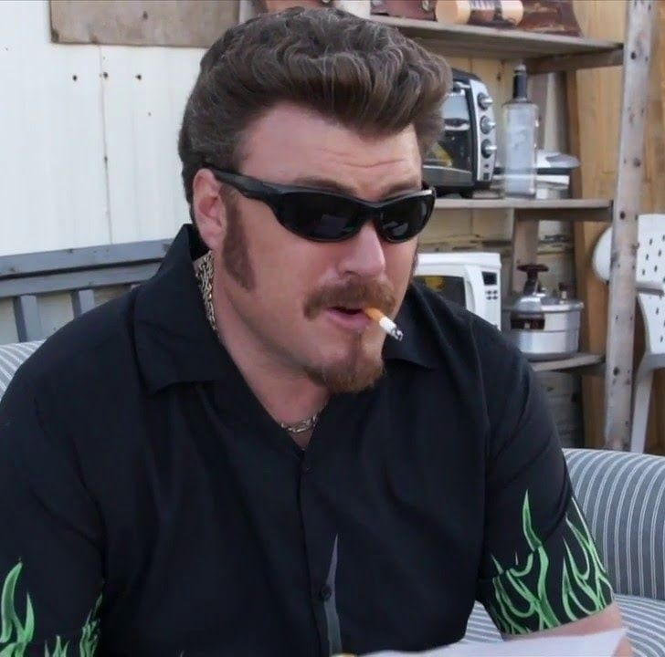

Chodzi o to, że jestem mądry, ale jestem taki samo-mądry. Samoukiem jestem. Uczyłem się obserwując życie, paląc jointy i tak dalej. Sam się uczyłem. I na tym polega cała różnica. Nie potrzebuję książek ani szkoły. Do wszystkiego doszedłem sam i dzięki temu żyję. Gdybym więcej czytał, albo poszedł na studia, to bym zmądrzał, ale też bym umarł. Tak mogło by być. Ale mój mózg nie potrzebuje tyle tlenu, bo nie jest cały zapchany. Tylko częściowo go używam i dzięki temu żyję. Klawisze dają nam książki, żebyśmy zmądrzeli, biorę i udaję, że czytam, ale nie czytam, bo jeszcze zapełni mi się mózg i przy następnym zawale umrę.